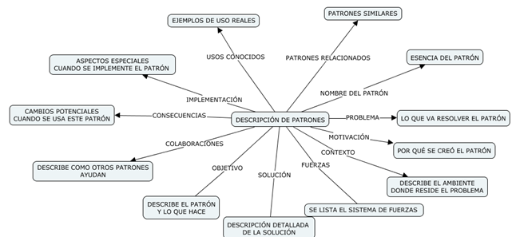

Es una regla de tres partes que expresa una relación entre cierto contexto, un problema y una solución.

El sistema de fuerzas hace que el diseñador escoja una solución adecuada. Es necesario tomar en cuenta que la solución no debe ser obvia y que se debe minimizar el componente o mano de obra humana.
- CLASES DE PATRONES
Los patrones en general se dividen en dos grandes grupos
- Patrones no generativos: describen un contexto y un problema, pero no describen una solución.
Ejemplo: nubes oscuras, significado de que va a llover.
- Patrones generativos: describe el problema, contexto, fuerzas del sistema y una solución práctica para el problema.
Como se ha dicho los patrones en general se dividen en estos grupos, pero para poder hablar específicamente de patrones de diseño de software es necesario hacer referencia únicamente a los patrones generativos. Lo anterior se debe a que en software no solo se necesita la descripción del contexto y problema, sino que se necesita una solución informática.
Dentro de este grupo existen algunas clasificaciones de patrones generativos usados en software.
Patrones arquitectónicos.- describen problemas de diseño de base amplia que se resuelven con el empleo de un enfoque estructural.
Patrones de datos.- describen problemas recurrentes orientados a datos y las soluciones de modelado de datos que pueden emplearse para resolverlos
Patrones de componentes.- se enfocan a problemas asociados con el desarrollo de subsistemas y componentes, así como a la manera en la que se comunican entre sí y su ubicación dentro de una arquitectura mayor
Patrones de diseño de la interfaz.- describen problemas comunes de interfaz de usuario y su solución con un sistema de fuerzas que incluye las características específicas de los usuarios finales.
Patrones de WebApp.- enfrentan un conjunto de problemas que surgen cuando se elaboran webapps y es frecuente que incorporen muchas de las otras categorías de patrones mencionadas. En un nivel de abstracción más bajo, los idiomas describen la forma de implementar todo un algoritmo específico o una parte de él, o bien una estructura de datos, para un componente de software en el contexto de un lenguaje de programación específico.
Patrones creacionales.- se centran en la “creación, composición y representación” de objetos
Patrones estructurales.- se centran en problemas y soluciones asociados con la manera en la que se organizan e integran las clases y objetos para construir una estructura más grande. En esencia, ayudan a establecer relaciones entre entidades dentro de un sistema. Por ejemplo, los patrones estructurales que se centran en aspectos orientados a clases proporcionan mecanismos de herencia que conducen a interfaces de programa más eficaces. Los patrones estructurales que se centran en objetos sugieren técnicas para combinar objetos dentro de otros objetos o para integrarlos en una estructura más amplia
Patrones conductales.- se enfocan a problemas asociados con la asignación de responsabilidad entre los objetos y a la manera en la que se efectúa la comunicación entre ellos.
- Estructura
Las infraestructuras específicas para una implementación. Las estructuras no son patrones arquitectónicos, sino más bien un esqueleto con varios “puntos de conexión” (también llamados ganchos o ranuras) que permiten adaptarlo a un dominio de problema específico. Los puntos de conexión permiten integrar clases o funciones específicas de un problema dentro del esqueleto. En un contexto orientado a objetos, una estructura es un conjunto de clases que cooperan.
Existen diferencias entre estructuras y patrones:
- Los patrones de diseño son más abstractos que las estructuras. Las estructuras están incrustadas en el código, pero en éste sólo es posible incrustar ejemplos de patrones. Una ventaja de las estructuras es que se escriben en lenguajes de programación y no sólo son estudiadas, sino ejecutadas y reutilizadas directamente […]
- Los patrones de diseño son elementos arquitectónicos más pequeños que las estructuras. Una estructura normal contiene varios patrones de diseño, pero lo contrario nunca se cumple.
- Los patrones de diseño están menos especializados que las estructuras. Las estructuras siempre tienen un dominio particular de aplicación. En contraste, los patrones de diseño se usan en casi cualquier tipo de aplicación. Si bien es posible tener patrones de diseño más especializados, incluso éstos no imponen la arquitectura de una aplicación.
- Descripción de un patrón

Así como existe el lenguaje natural también existe el lenguaje de patrones, así mismo existen repositorios de patrones.